PROJECT 03
ELAIA
Brand Identity | Digital Campaign
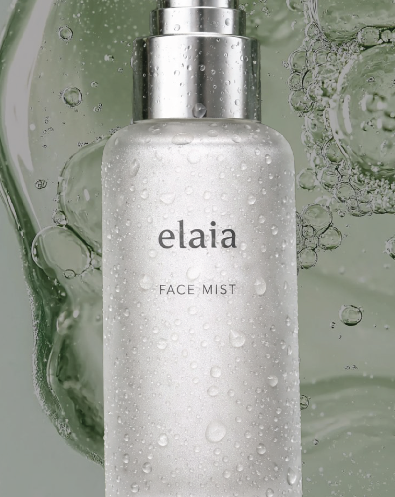
INTRODUCTION
Elaia is a conceptual skincare brand built around a fresh, natural approach to hydration.
The project focused on developing a cohesive visual direction for the launch of a new face mist, from product imagery to social media communication.
VISUAL LANGUAGE
The visual direction combines soft natural tones, tactile imagery and minimal typography to communicate hydration while keeping the product at the centre.
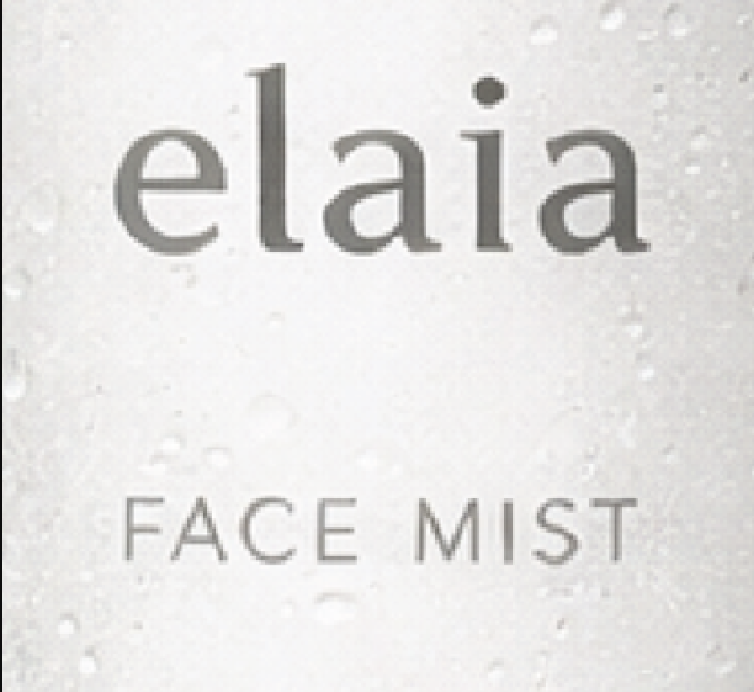
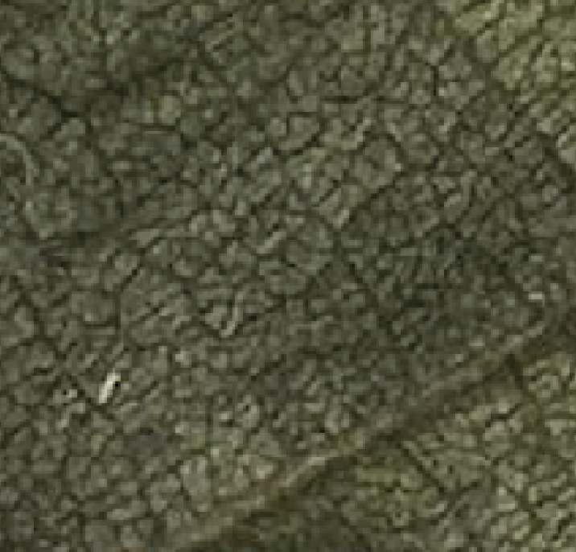
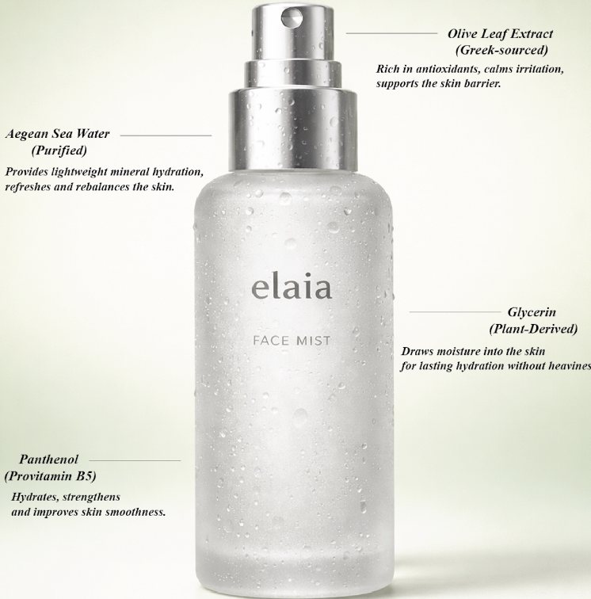
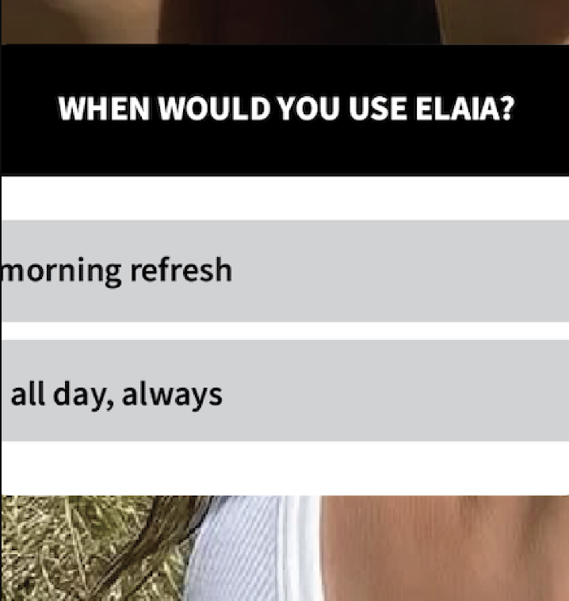
FROM PRODUCT TO CAMPAIGN
The campaign was built around three visual roles: introducing the product, creating desire and communicating its benefits.
THE PRODUCT
A clean product-focused image establishes the visual identity and introduces Elaia.
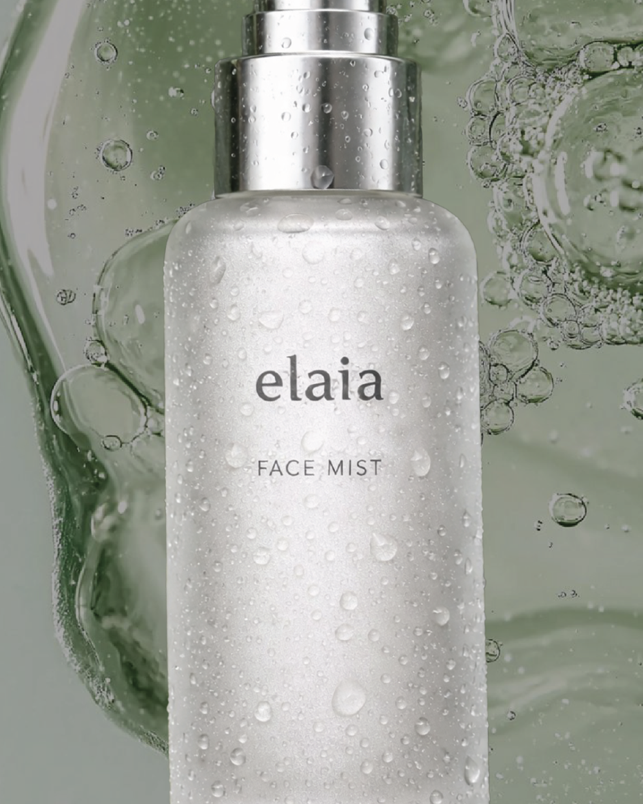
THE CAMPAIGN
An atmospheric image shifts the focus from the product to the experience.
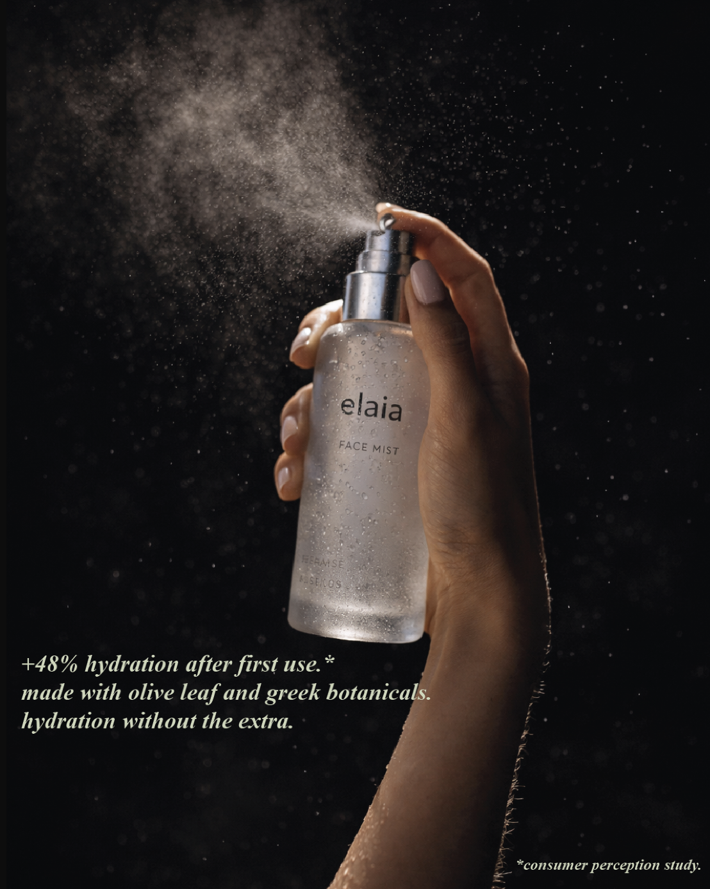
THE INFORMATION
Product details are translated into a clear and informative visual format.
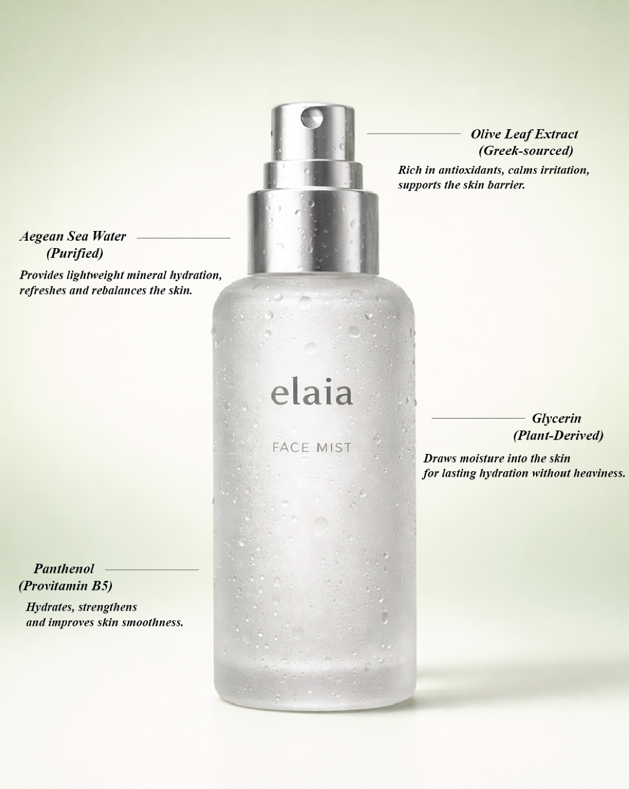
SOCIAL MEDIA APPLICATION
The visual direction was adapted into social formats, balancing product communication with more interactive and lifestyle-led content.
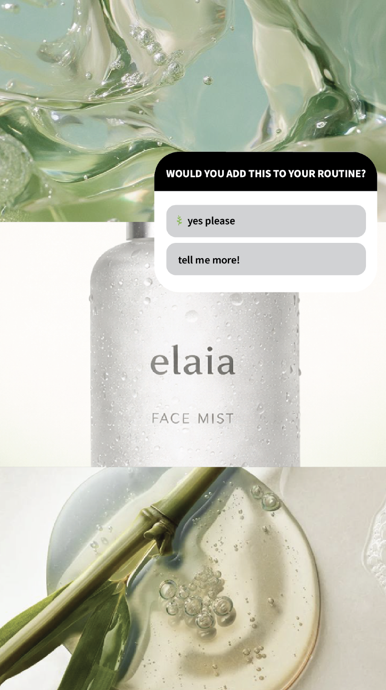
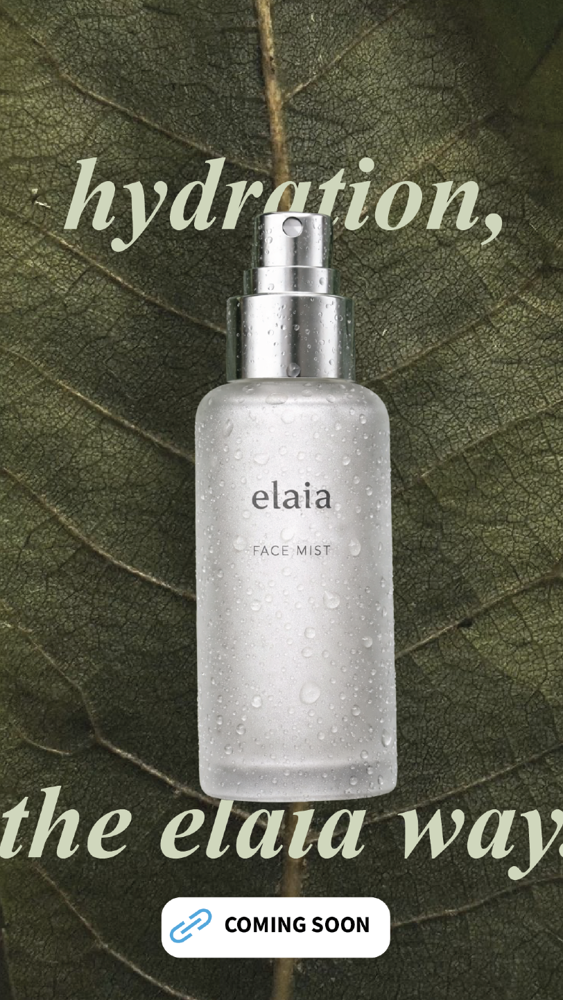
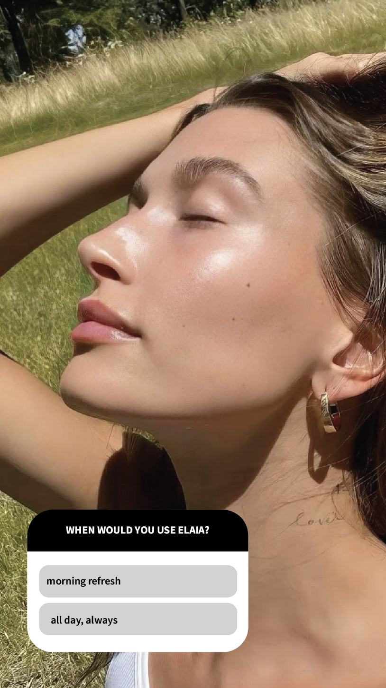
THE TAKEAWAY
Elaia allowed me to explore how a visual direction can stay cohesive while adapting across different messages, formats and contexts.